Mela Yerka
Works
by series
by year
Mars
Feral Children
19th Century Women
Grimm Tales
Dead
Beautiful Painting of War
Bio
Statement
Exhibitions
Links
Contact
Maria Stenfors
Menu
Exhibitions
Mela Yerka
Kamarade / Stockholm, Sweden
4–22 April–12 June 2016
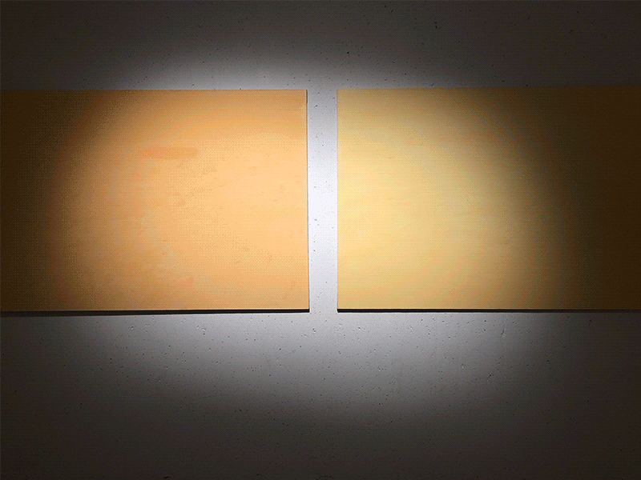
panoRama
Opere Scelte / Turin, Italy
4–24 September–24 October 2015
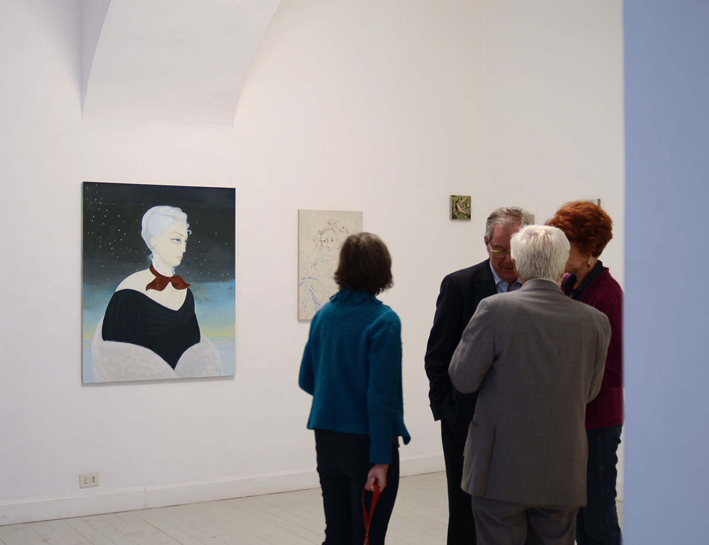
Albin Looström and Mela Yerka
Kamarade / Falsterbo, Sweden
4–17 July 2015
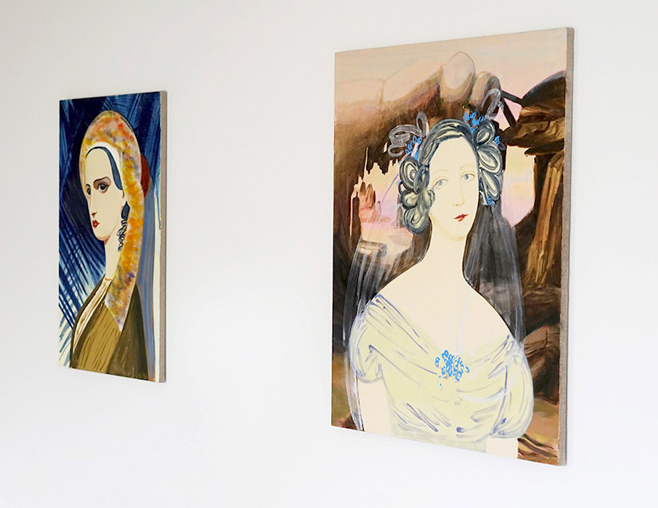
And the — the Surface is Fine and Powdery
Maria Stenfors / London
12 September–18 October 2014
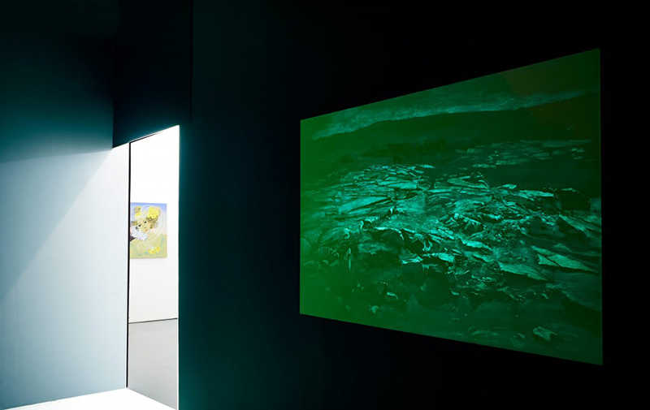
Furnishings
Sebright House, Hackney / London
2–3 August 2014
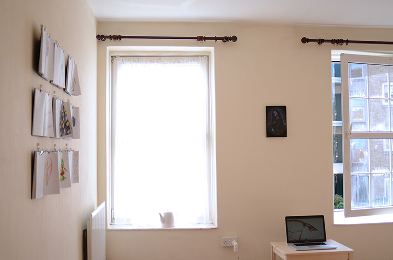
Art & Gryl
Chomiczowka City Gardens / Warsaw
19 July 2014
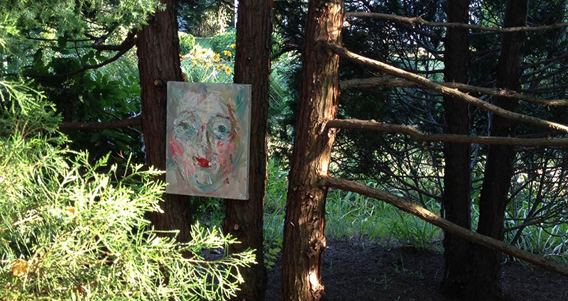
part is fame [art as game]
Schleifmühlgasse 12-14 / Vienna
16–22 May 2014
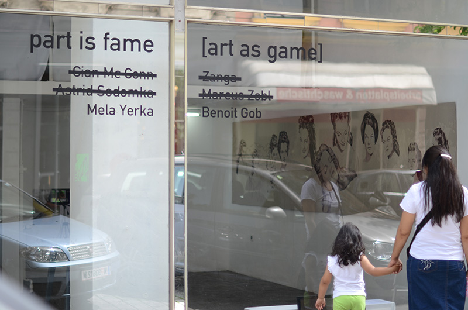
Nothing About Trees
Elthorne Studios / London
19–26 October 2013
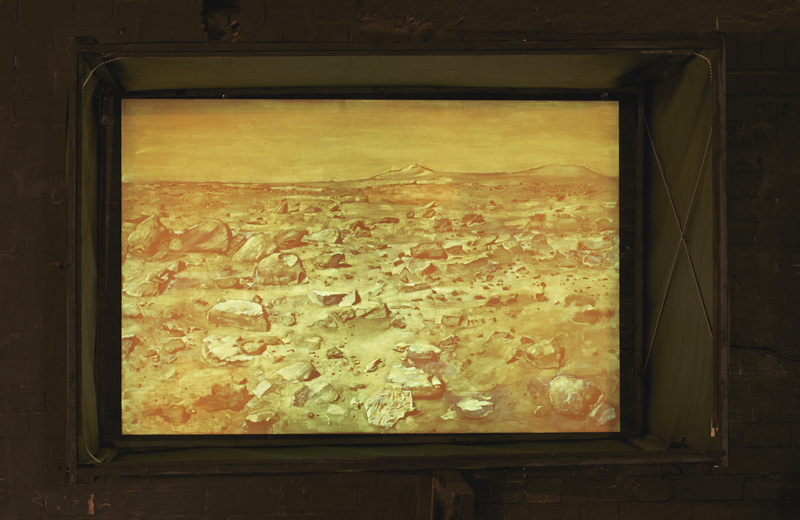
What Red Blue is in?
Maria Stenfors / London
10 January–16 February 2013
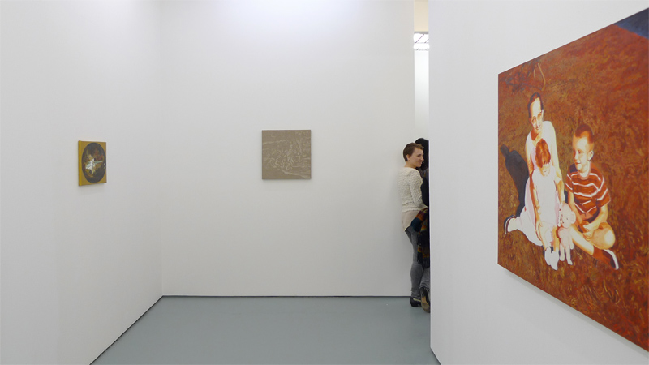
Chase of Grace
Maria Stenfors / London
13 January–18 February 2012
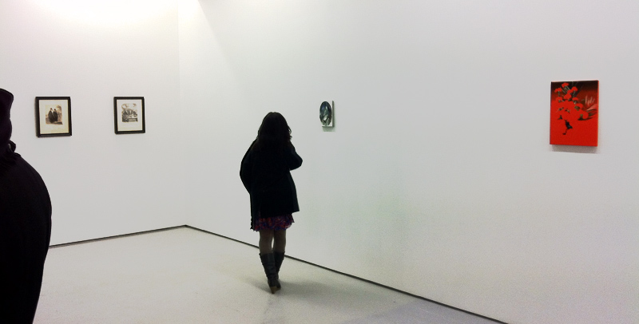
Cross Over
CSM Lethaby Gallery / London
24 October–24 November 2012
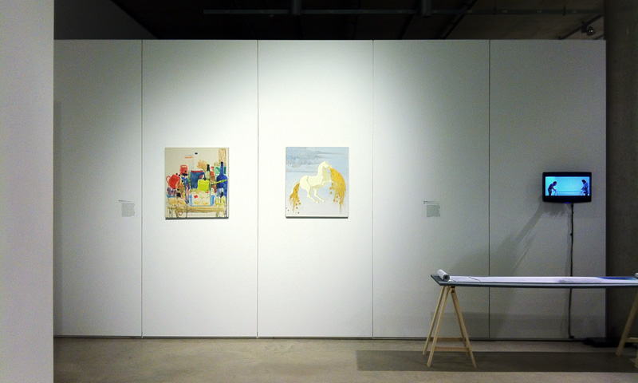
MA Fine Art final show 2011
CSM Charing Cross / London
30 August–5 September 2011
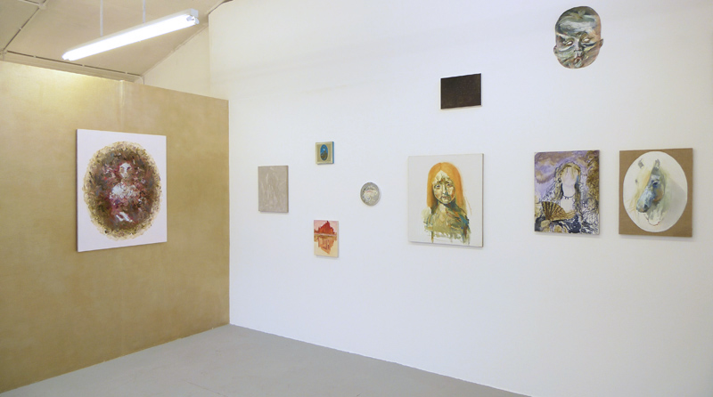
The New Pretenders
Oxo Tower Wharf / London
27–30 January 2011
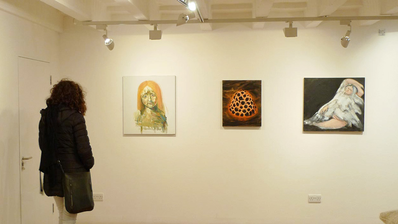
Wild Life
We Are Arts Gallery / London
29 November–5 December 2010
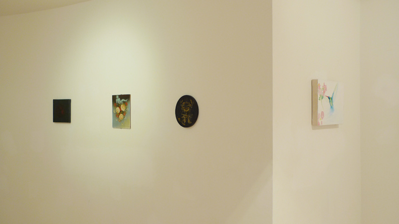
Wernix
Teatr Nowy (New Theatre) / Warsaw
July 2009
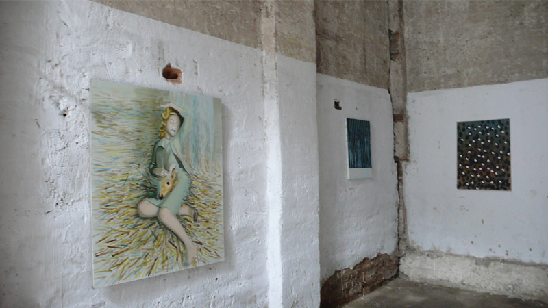